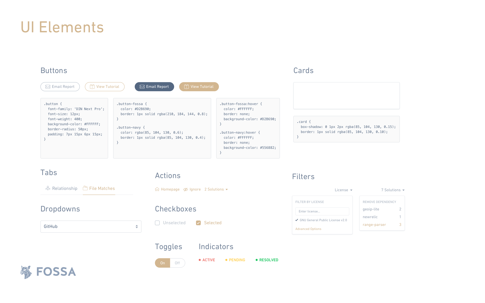

I worked with FOSSA to design a workflow for developers and product managers that streamlines the process of tracking and fixing issues related to licenses in code. My design for FOSSA focuses on simplifying the workflow for managing and tracking unlicensed dependencies, giving the user interface a consistent style and creating a stronger brand.
This was my first time designing for dev tools. Although I had development experience, it still took me quite a long time to get familiar with all the terms and processes. All the past projects I've worked on were things and topics I experience in daily life such as education, productivity, music, etc. To fully understand FOSSA, I had to ask my client a lot of questions about development workflow and the problems they have with the current interface. This is the official definition for FOSSA:
"FOSSA continuously analyzes your code to track Open Source license obligations, automatically handle BOMs/attribution and proactively find issues — all within your current developer workflow."
Open Source is the backbone of all tech enterprises. Modern software depends on Open Source (OSS). OSS license violations have been inherited by every company and they spend millions on solutions that don’t work because they are too manual and have bulky and painful workflow.
To break it down, a good analogy for FOSSA is giving credits for co-authors. If you want to publish a paper about a new technology that involves a lot of research material that was done by other people or institution, you need to give credits for those who contributed to the new technology that you developed. However, this process can get really tough if you already finished the paper and start manually tracking down the materials you used and people who contributed to them. What if we can make it easier? What if we can help you manage as you write the paper and let you know in real time? This is FOSSA.
Dev tools is one of the kind of beasts that designers usually don't touch on. The complexity of the development workflow not only costs time for developers but also gives a headache to designers. It is not rare to see the how the user interface reflects the complexity in a way that it's confusing and time-consuming to use, which counters the point of having a dev tool in the first place. Over the years, I have seen more design effort put on dev tools such as Code Climate, Travis CI, Heroku, and GitHub, etc. Similar to what they are trying to solve, the problem with FOSSA was also obvious: complex.
When I first started working on FOSSA, these were a couple of things we discovered with the old interface:
Having the problems defined, I started thinking about how we could simplify the workflow so that even the non-developers like product managers would be able to understand and make the best use of the tool. Meanwhile, I talked to the client and researched on how FOSSA works and what it does. It imports the project code from Github and scan to see if it uses any code from third-party code (open-source) and there's any violation of open-source license. And then FOSSA gives you suggestions on how you can fix the issues. FOSSA also tracks what issues have been solved and what issues are more urgent.
To sum it up, the workflow is more like how Google Inbox works. The caveat here is that Inbox bundles your emails so even though you may receive hundreds of emails you only see the bundles so that you know instantly what the content might be and what actions you want to take. So instead of having a interface that's more focused on presenting and browsing information, we need a interface that has clear actions and present the information in a digestable way.
I designed the Overview page to fill up the gap between data browsing and action taking. The result is an unified dashboard that summarizes the issues you need to solve and most important information about the project.
The goal for the Issues page to present user a list of unlicensed dependencies and provide them options that fix the unlicensed dependencies issues. I used a panel view for the selected item so that user can get more details as they browse the list.
For the design language, I wanted to go for a more professional, reliable, robust feel. I used played around with typography and colors to achieve this.
